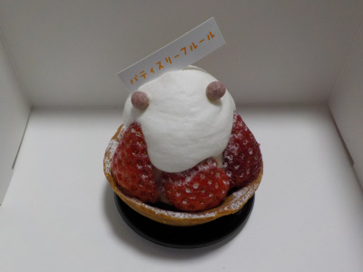
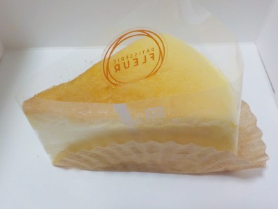

フルールのイチゴのタルト。
2022/12/25

こんもりとしていて可愛い苺のタルトです。
苺の赤が濃くて綺麗です。味も濃く、甘くて美味しかったです。
12月になると苺がスーパーで売ってたりクリスマスケーキに乗ってたりしますが、味が薄いものが多いので別の果物の方がいいって思っていました。
12月でも美味しい苺があるんですね。
島根県雲南市三刀屋町下熊谷1780-2
2022/12/25

こんもりとしていて可愛い苺のタルトです。
苺の赤が濃くて綺麗です。味も濃く、甘くて美味しかったです。
12月になると苺がスーパーで売ってたりクリスマスケーキに乗ってたりしますが、味が薄いものが多いので別の果物の方がいいって思っていました。
12月でも美味しい苺があるんですね。
2022/03/25

ケーキの上にある店名の字を逆に写してました。よく見て写真を撮らないといけませんね。
キメが細かくてふんわり軽いチーズケーキでした。
こうゆう柔らかいものって、むしゃむしゃ沢山食べたいってよく思います。
でもケーキは高いので、沢山は買えないです。